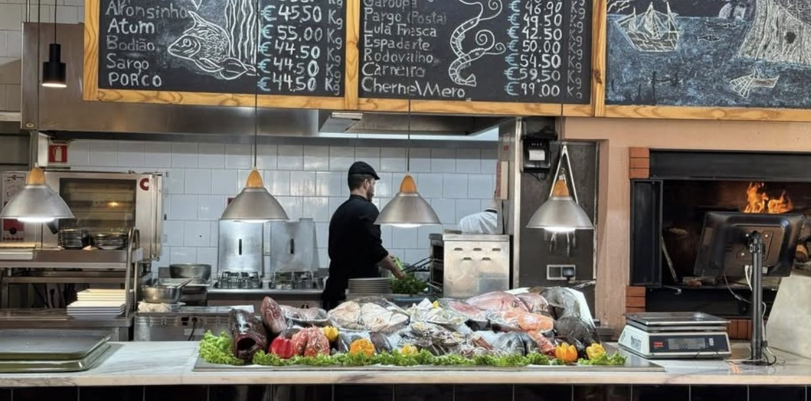
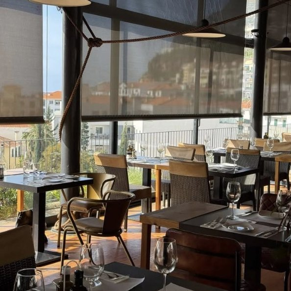
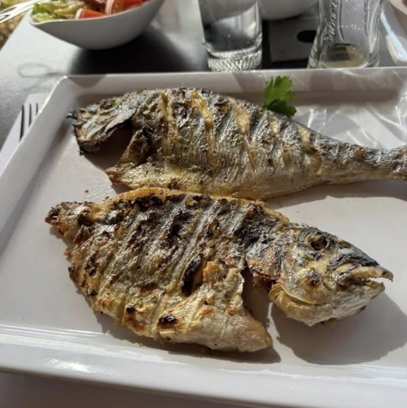

🌿 Resans Strategi
Resan handlar om vandring och naturupplevelser — med fokus på lätta och medelsvåra leder (3–13 km, inga exponerade bergskammar). Vi bor på ett ställe — Funchal — och gör dagsturer med hyrbil; inget mål ligger mer än ~1 timme bort. Vandringarna läggs på tidiga morgnar innan molnen drar in över bergen, eftermiddagarna går till hav, bad och vila.
Veckan i korthet
🥾 Levadas & vandringar
Utvalda för att vara lätta till medelsvåra: tydliga stigar, måttlig stigning och inga svindlande kammar. Levadas är 1500-talets bevattningskanaler med smala gångstigar längs kanten — platta, lummiga och unika för Madeira. De officiella lederna heter PR + nummer och nästan alla kräver sedan 2026 förbokad tid och avgift (4,50 € p.p.) via SIMplifica.
Leder stängs ibland efter ras eller brand. Kolla status hos IFCN/SIMplifica några dagar innan — särskilt PR1-området, som har varit stängt i perioder.
Medvetet bortvalt: PR1 Arieiro → Ruivo längs bergskammen — fantastisk men krävande (branta trappor, exponerade partier, ~7 km enkel väg). Vi tar Pico Ruivo den lätta vägen via PR1.2 i stället.
🎟️ Biljetter & bokningar
Sedan 1 januari 2026 måste man boka tid och betala i förväg för Madeiras officiella vandringsleder (PR) — betalning sker bara online, och kontroller och böter förekommer. Så här ser det ut för leder och upplevelser i vår plan:
| Vad | Dag | Biljett | Var / när boka |
|---|---|---|---|
| PR8 São Lourenço | 3 | 4,50 € p.p. | SIMplifica, 30-min-fönster |
| PR11 Balcões | 3 | 4,50 € p.p.* | SIMplifica |
| Pico do Arieiro, utsikten | 4 | Gratis | Bilväg ända upp — ingen bokning |
| Ninho da Manta | 4 | Troligen PR1-biljett (10,50 €) | Ligger på PR1-leden — hoppa över om vi inte bokar PR1 |
| PR1.2 Pico Ruivo | 4 | 4,50 € p.p. | SIMplifica · gratis parkering i Achada do Teixeira |
| Fanal | 5 | Gratis* | Ströva fritt i skogen; själva leden PR13 kan kräva biljett |
| Porto Moniz lavapooler | 5 | Liten entré | Betalas på plats |
| PR6 25 Fontes / PR6.1 Risco | 6 | 4,50 € p.p. | SIMplifica — boka tidig tid, populärast av alla |
| Rabaçal-skytteln | 6 | ~5 € enkel / 8 € t/r | På plats, ofta bara kontanter · går ca 10–18 |
| PR9 Caldeirão Verde | 7 | 4,50 € p.p. | SIMplifica |
| Valsafari | 2 | Operatörens pris | Boka några dagar innan, välj dag med lugnt hav |
| Linbana, Monte Palace & korgkälke | 2 | Separata biljetter | På plats |
Så funkar SIMplifica
Välj led, datum och ett 30-minutersfönster för start. Alla i sällskapet ska vara med i bokningen. Spara QR/kvitto i mobilen. Ändring eller återbetalning går i regel bara om leden stängs av myndigheten.
simplifica.madeira.gov.pt →Dagspass eller styckvis?
Det finns pass: 1 dag 9 €, 3 dagar 22,50 €, 7 dagar 52,50 €. Med vår plan (fem betalleder på fyra dagar) blir det billigare att köpa styckvis: ~22,50 € p.p. för hela veckan. Dag 3 (två leder) går jämnt ut med dagspass.
När boka?
Boka lederna när veckoplanen är spikad, gärna 1–2 veckor innan. Men eftersom pengarna i regel inte återbetalas vid dåligt väder: kolla prognosen och boka bergsdagarna (PR1.2, PR9) några dagar innan. Barn under 12 är gratis men ska ändå registreras.
* Källorna är oense om PR11 (gratis eller 4,50 €) och om Fanal/PR13. Avgifter enligt Visit Madeira och SIMplifica 2026 (Portaria 801/2025, ändrad 48/2026); med certifierad guide är avgiften lägre (3 €). Dubbelkolla i SIMplifica innan avresa — reglerna har ändrats flera gånger.
✈️ Flyg & datum
Flyget är ✓ BOKAT: sju nätter på Madeira, måndag 12 – måndag 19 april 2027, och en natt i Helsingfors på hemvägen.
Mån 12 april
08.00 Stockholm Arlanda → Helsingfors → 15.50 Funchal (lokal tid).
Madeira ligger 1 h efter Sverige. Hemma i tid till middag i gamla stan.
Mån 19 april
16.40 Funchal → Helsingfors. Landar sent på kvällen (Finland ligger 2 h före Madeira). Övernattning i Helsingfors.
Boende i Helsingfors: EJ BOKAT — välj centralt, eftersom vi har hela tisdagen i stan. Tåget från flygplatsen tar ~30 min. Annars ett flygplatshotell om vi landar för sent för tåget.
Tis 20 april
20.25 Helsingfors → Stockholm Arlanda.
Hela dagen ledig i Helsingfors — se dag 9.
Madeira i mitten av april
- ~19–20°C dagtid i Funchal, ~14°C på kvällen. Havet ~18°C — svalt men badbart i lavapoolerna.
- Regnsäsongen klingar av i april: oftast korta skurar, mest på nordsidan och i bergen. Planera bergsdagarna efter prognosen.
- Långa dagar: solen går upp ~07.30 och ner ~20.15 — gott om tid för både vandring och middag.
- Grönt och blommande efter vinterregnen. Påsken (28 mars) är över och blomsterfestivalen (från 29 april) har inte börjat — lugnare och billigare veckor.
Temperaturer och soltider är ungefärliga medelvärden för Funchal.
🗺️ Förslag: Dag för dag
Ett utkast, inget är bokat ännu. En vandring per dag, max medelsvår, med vila och natur på eftermiddagen. Bergsdagarna går att byta plats med varandra beroende på väderprognosen — kolla webbkameran på Pico do Arieiro kvällen innan.
🏡 Boende
Vi bor i Funchal hela veckan — ✓ BOKAT på Hotel Madeira i centrum, med promenadavstånd till gamla stan, saluhallen och fiskkrogen. Med bil ligger alla utflykter inom ~40–60 min.
🍷 Mat & dryck att prova
Madeirisk mat är rustik, havsnära och full av tropisk frukt. Det här ska vi inte missa:
🍢 Espetada
Oxkött marinerat i vitlök och lagerblad, grillat på lagerträspett och hängt över bordet. Klassiskt på bergskrogar i Estreito de Câmara de Lobos.
🐟 Espada com banana
Svart hårstjärtfisk från djuphavet — ser skräckinjagande ut, smakar mild. Serveras friterad med stekt banan och ibland passionsfruktsås.
🐚 Lapas
Skålsnäckor grillade i järnpanna med vitlöksmör och citron. Bäst vid havet — t.ex. i Câmara de Lobos eller Porto Moniz.
🍞 Bolo do caco
Platt sötpotatisbröd bakat på stenhäll, serverat varmt med vitlökssmör. Kommer till nästan varje måltid.
🍹 Poncha
Sockerrörsbrännvin (aguardente), honung och citron vispat med en caralhinho-stav. Stark! Klassikern är Taberna da Poncha i Serra de Água.
🍷 Madeiravin
Starkvin i fyra stilar från torr Sercial till söt Malvasia. Provning på Blandy's Wine Lodge mitt i Funchal — gärna en 10-årig Malmsey till efterrätten.



"Förmodligen Madeiras bästa fiskrestaurang"
Ett tips från Facebook: dagens fångst ligger på is i disken, man pekar ut sin fisk, den vägs och läggs direkt på vedgrillen. Ljus matsal med glasväggar och utsikt över Funchal. På tavlan: pargo, garoupa, espadarte, bläckfisk och tonfisk för ~45–60 €/kg (cherne ~99 €/kg) — en grillad fisk per person hamnar oftast runt 15–25 €.
Namnet stod inte i inlägget. Bilderna stämmer bäst med Peixaria no Mercado i Mercado dos Lavradores, som ofta kallas stans bästa fiskkrog — där vägs fisken och priset bekräftas före tillagningen. Kolla namnet innan vi bokar. Perfekt till avslutningsmiddagen dag 7.
🍽️ Prisvärda favoriter — där lokalbefolkningen äter
Utvalda för bra mat till rimligt pris — inga turistfällor eller stjärnkrogar. Räkna med ~12–25 € för en huvudrätt på en tasca, lite mer för fisk. Sorterade efter var vi är under vandringsdagarna.
Prisnivå: € = billigt, €€ = mellan. Öppettider ändras — kolla Google Maps innan, många tascor har stängt en dag i veckan. Fråga alltid om kilopriset innan fisken grillas.
🎒 Bra att veta innan avresa
Praktiska baskunskaper inför resan.
✈️ Flyg
✓ Bokat via Helsingfors, 12–20 april (se Flyg & datum). Funchals flygplats är känd för fallvindar; förseningar och omdirigeringar händer, så planera inget viktigt första kvällen.
🚗 Hyrbil
Dag 3–7 (14–18 april). Flera lokala uthyrare kör ut bilen till hotellet i Funchal och hämtar den igen — kostar ofta 0–15 € per körning, fråga vid bokning. Välj en liten bil med lite kraft (smala garage, brutalt branta backar) och gärna automat. Dag 1 tar vi taxi från flygplatsen (~25 min), dag 8 taxi tillbaka.
🎟️ Boka leder i SIMplifica
Skapa konto och boka lederna i förväg (4,50 € p.p. per led) — se Biljetter & bokningar för hela listan.
simplifica.madeira.gov.pt →💶 Valuta, dricks & el
Euro, kort fungerar nästan överallt (ha lite kontanter till parkering och små barer). Dricks är frivilligt — avrunda eller ~5–10 % på restaurang. Samma eluttag (typ F) och 230 V som hemma — ingen adapter behövs.
📶 Mobil & dokument
EU-roaming — svenska abonnemanget fungerar som hemma. Pass eller nationellt ID-kort räcker. Ta med EU-kortet (europeiska sjukförsäkringskortet) från Försäkringskassan.
⛅ Mikroklimat
Södra kusten är solig medan norra sidan och bergen kan ligga i regn och moln. Är det molnigt i Funchal kan det vara klart ovanför molnen på Pico do Arieiro — och tvärtom. Kolla webbkameror och IPMA varje kväll.
🧥 Packning för vår på Madeira
Lager på lager. Funchal är t-shirtväder på dagen men svalt på kvällen (~14°C). På Pico do Arieiro (1 818 m) kan det vara nära nollgradigt vid soluppgång — mössa, handskar och dunjacka. Vandringsskor med bra grepp (levadakanterna kan vara hala), regnjacka, liten dagsryggsäck, vandringsstavar om ni brukar använda, pannlampa (tunnlarna på PR9), badkläder till lavapoolerna och solskydd — UV-strålningen är stark även när det känns svalt.